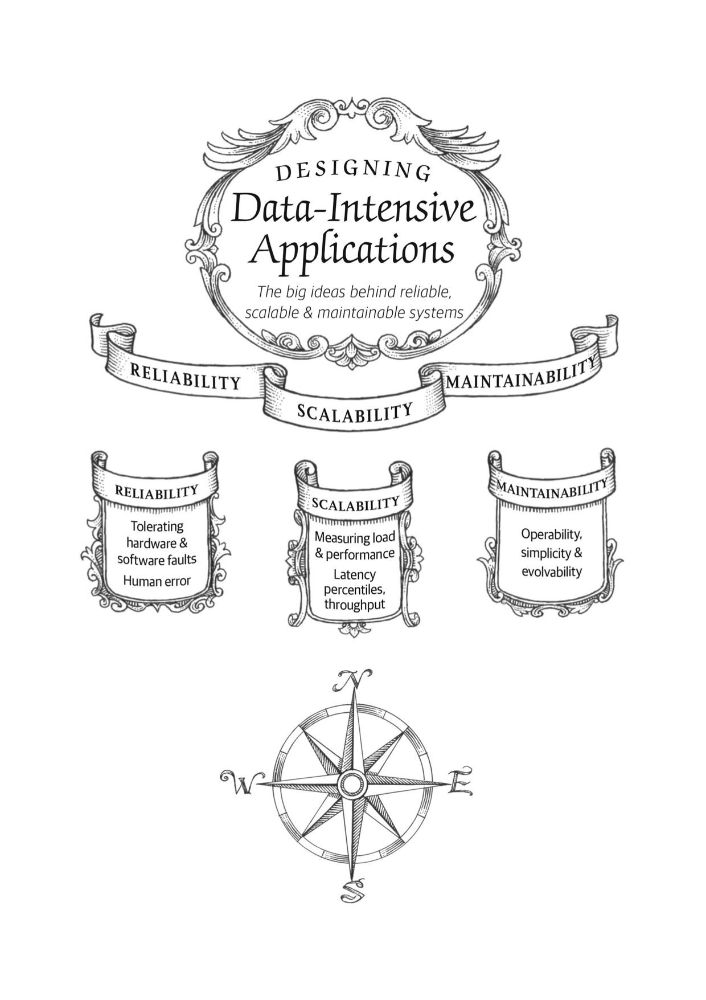
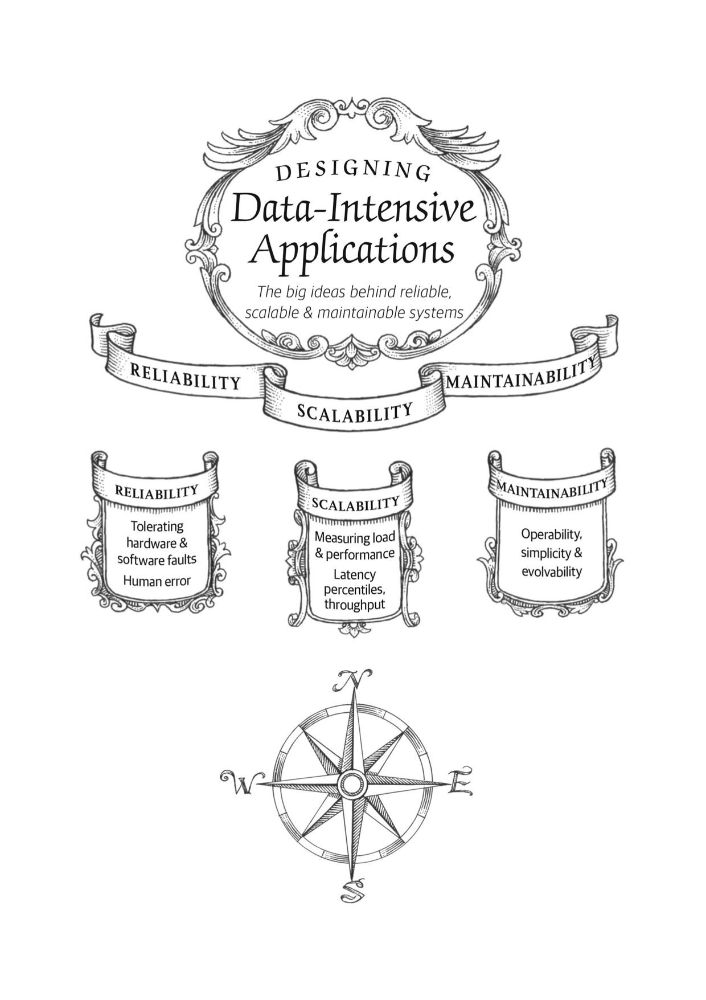

第一章：可靠性、可伸缩性和可维护性
互联网取得了如此伟大的成就，人们习惯于它的存在就如同海洋自然的存在一样，我们甚至都已经忘记它是一个人造的产物。我们甚至都想不到上一次发生如此伟大的技术革命是在什么时候。
— Alan Kay, 在接受 Dr Dobb’s 期刊采访时说 (2012)
在如今，很多系统都是数据密集型（data-intensive）系统，而非计算密集型（compute-intensive）的。

互联网取得了如此伟大的成就，人们习惯于它的存在就如同海洋自然的存在一样，我们甚至都已经忘记它是一个人造的产物。我们甚至都想不到上一次发生如此伟大的技术革命是在什么时候。
— Alan Kay, 在接受 Dr Dobb’s 期刊采访时说 (2012)
在如今，很多系统都是数据密集型（data-intensive）系统，而非计算密集型（compute-intensive）的。